Kind Subscription
Problem: in Avito you could only help charities once at a time — to keep supporting them you had to go through the whole flow again
Solution: We introduced recurring donations to make regular giving effortless for donors and provide charities with predictable funding.

About the project
Kind Subscription is a monthly donation subscription to a charity in Avito’s charity section. Users pick a foundation and an amount once, and subsequent payments run automatically.
Predictable funding helps charities plan their work ahead. For donors, it’s essential to see upfront who receives the money, when the next charge happens, and how to edit or cancel the subscription.
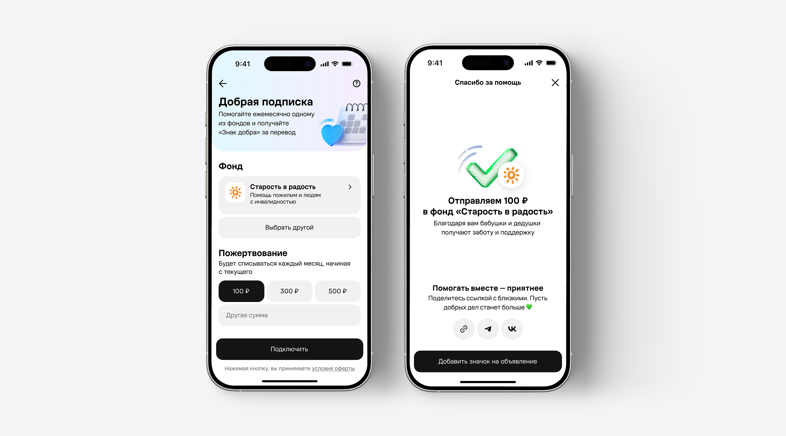
Goals
We built the flow around three core goals:
Enable recurring donations without forcing users to repeat the entire flow.
Showcase each charity’s impact before payment so donors know who they’re supporting.
Unify payment and thank-you screens, which previously looked inconsistent across different charity flows.
From one-off help to a subscription
I combined charity selection, the donation amount, and a "One-off / Monthly" toggle onto a single screen. Previously, choosing a charity and picking an amount were split across two separate steps.
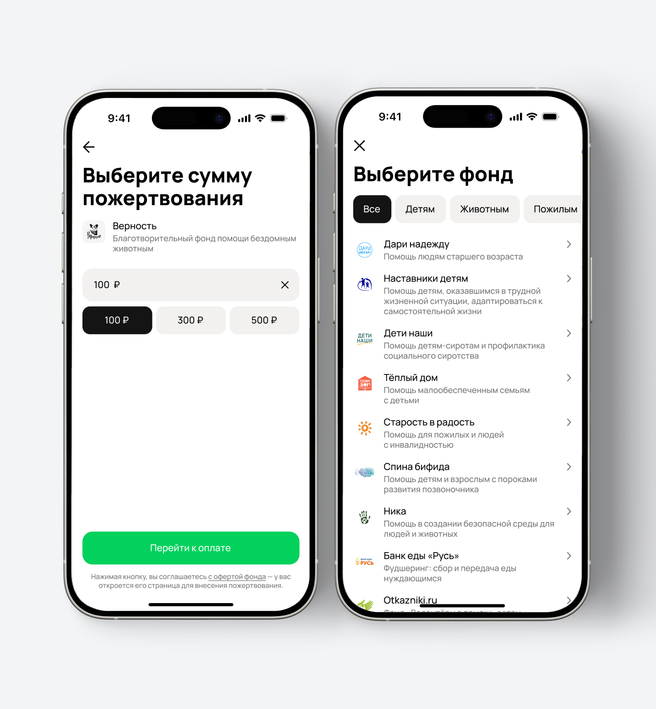
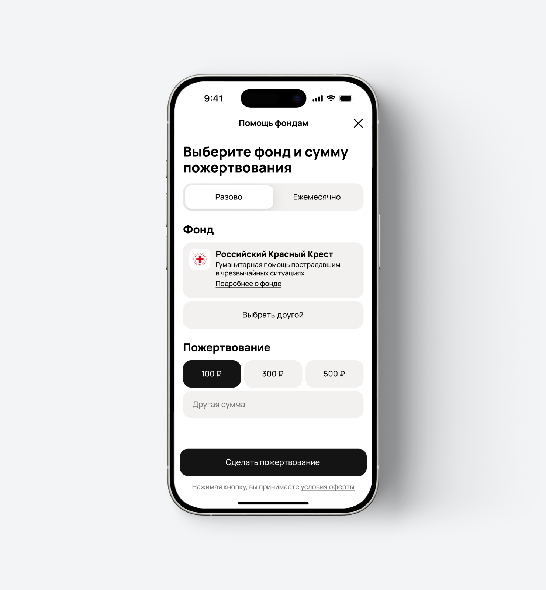
Concepts
My initial hypothesis was that a shorter flow with less information about each charity would make signing up easier. Using our existing one-off flow as a baseline, I created a condensed version and brought it into user interviews.
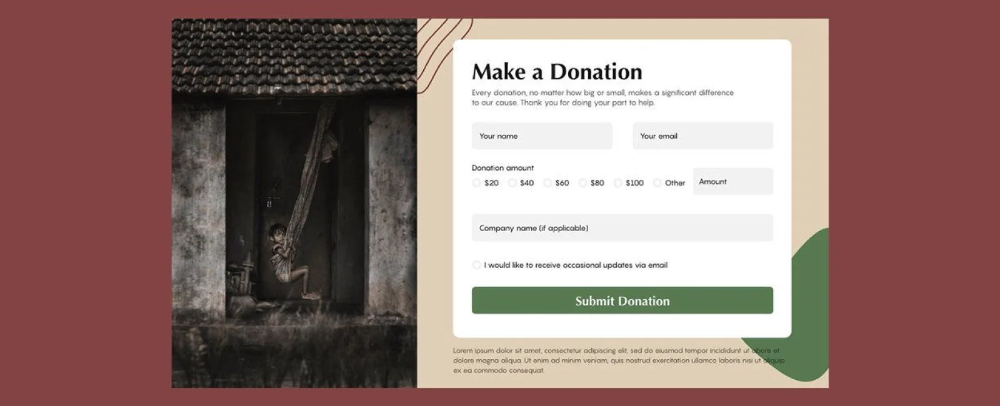
Research
The interviews challenged that hypothesis. People wanted to understand what a charity does and see its real impact before committing to a monthly payment. Based on these insights, I kept the setup compact but surfaced each charity’s reports before donors chose an amount.
Entry points
The subscription appears in search results, on the charity landing page, and right after a user posts a listing. In each context, the prompt respects what the user originally came to do.
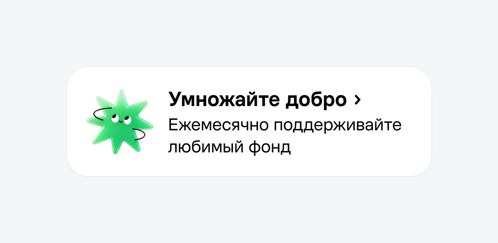


After listing creation, we offer to help only once the main task is done. In search results, a compact banner introduces the subscription, while the charity landing page explains the terms in detail.
We also used ML models to identify repeat one-off donors and invite them to automate their giving. Once they subscribed, their chosen amount was donated automatically every month.
Imagine you’ve made a few one-off donations on Avito. You see an invitation to switch to monthly giving and open the charity’s report to see what it has accomplished recently. Then you pick 300 rubles a month and review the recurring payment terms before confirming.
Choosing a charity
I moved charity selection to the very first screen: before picking an amount, you can learn about the organization, switch to another one, or open its "Good deeds" reports.
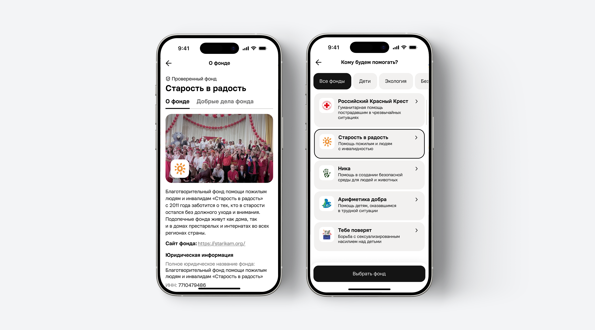
For one-off donations, we suggest charities from random categories so that less visible charities get support too, not just children and animals (2 most popular categories among users).
Subscribing
The setup screen brings together the charity, the amount, and the recurring payment schedule. You can pick 100, 300, or 500 ₽, or enter a custom amount. The terms for recurring charges are shown upfront before you subscribe.
I moved all the key details into a "How it works" section: zero fees, 100% of funds go directly to charities, a monthly "Kindness badge," and easy ways to edit or cancel. This keeps the main screen clean and compact.
Thank-you after payment
Once the payment goes through, the screen confirms that the monthly donation is active. I created a Lottie-heart animation to make that moment feel warm and personal.
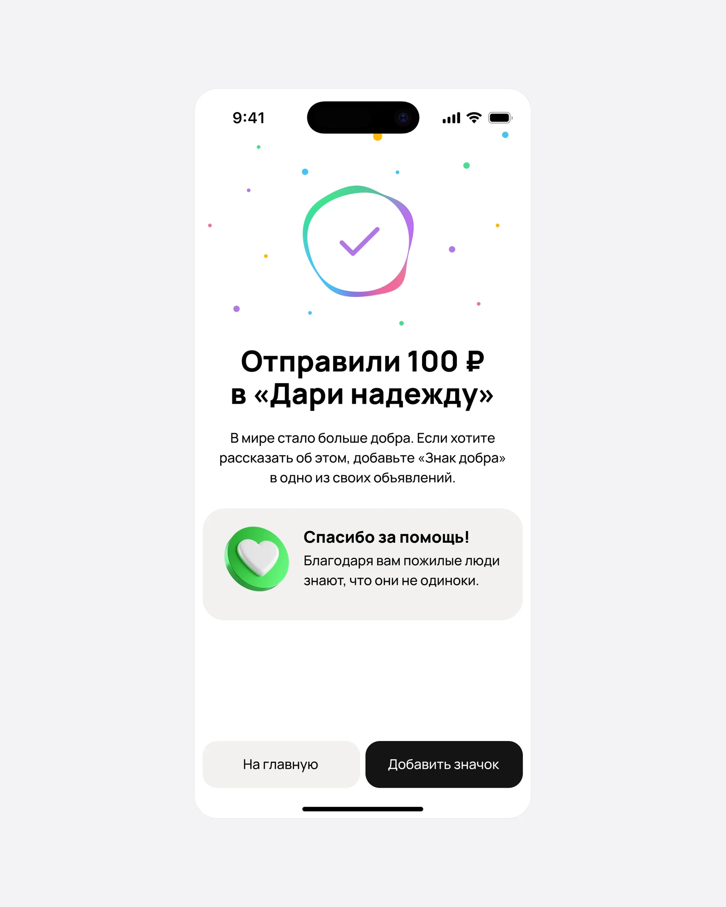
For subscriptions, the screen confirms the monthly donation and its terms. I added the lottie heart animation along with two next steps: sharing the campaign and adding a "Kindness badge" to your listing.
About 2,000 thank-you screen views per day across all charity flows, not just subscriptions.
Managing the subscription
Later on, donors can open their profile to check the next billing date, adjust the amount, or cancel their subscription.
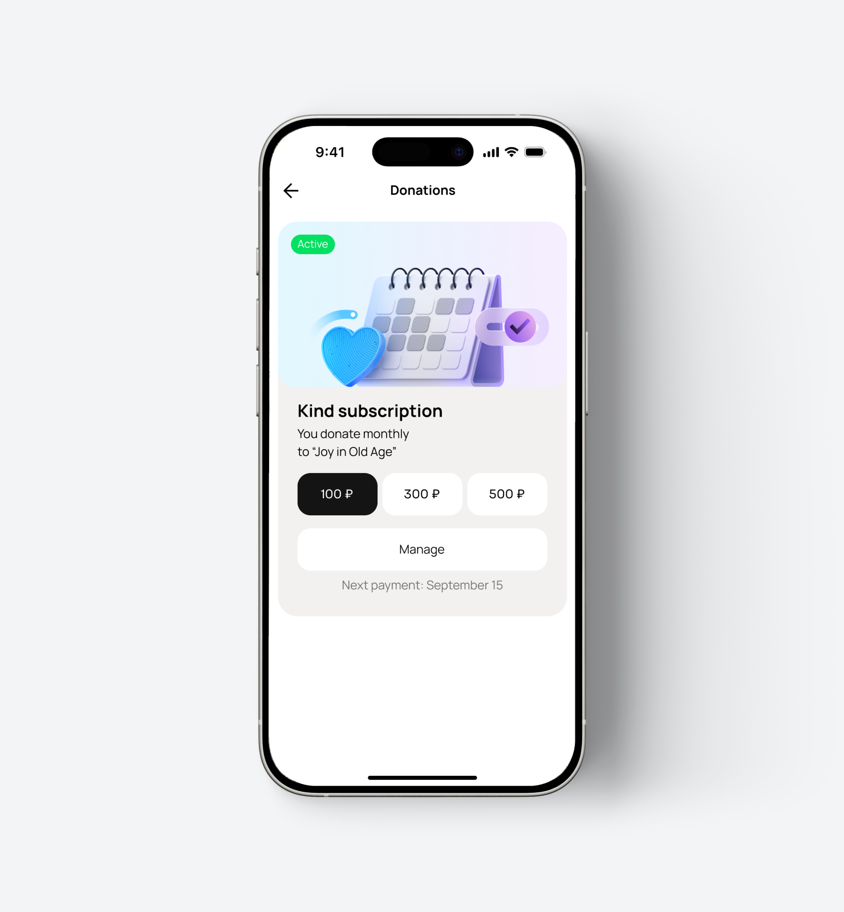
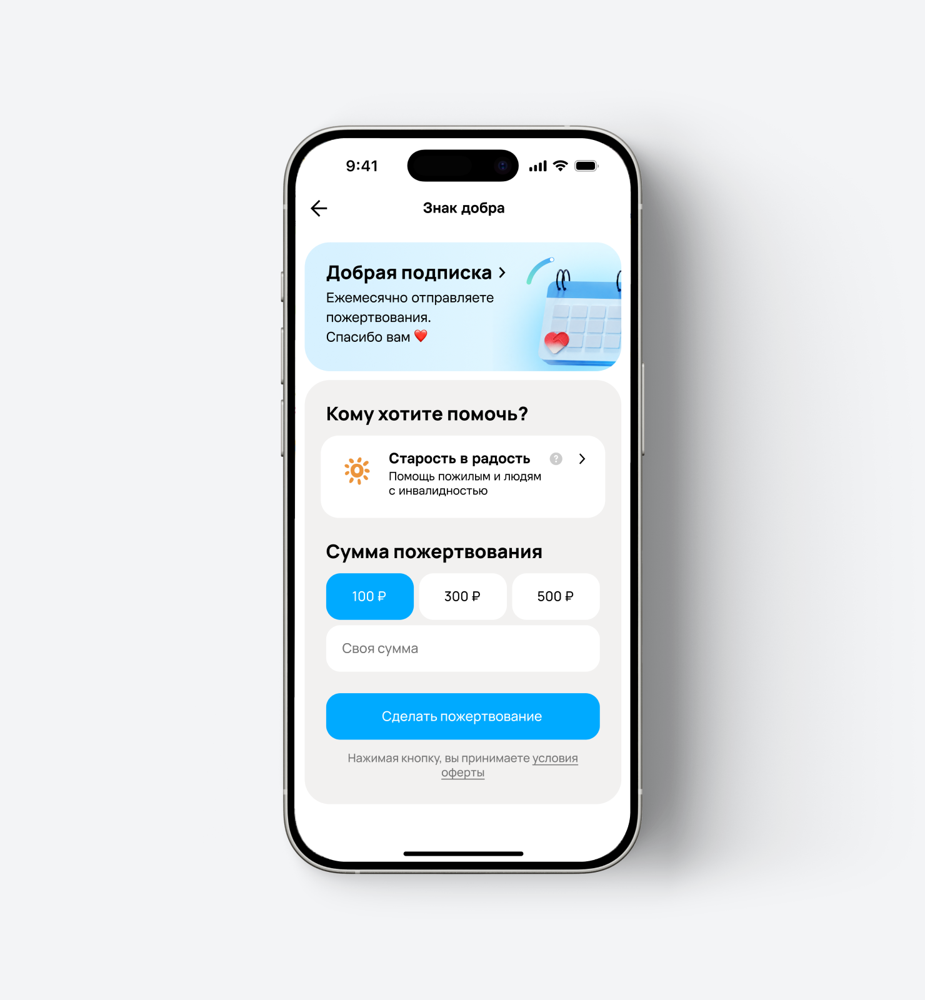
In the MVP, switching to another charity requires cancelling the current subscription and starting a new one, due to a limitation in the YooKassa payment gateway. Seamless switching without cancelling is planned for the next release.
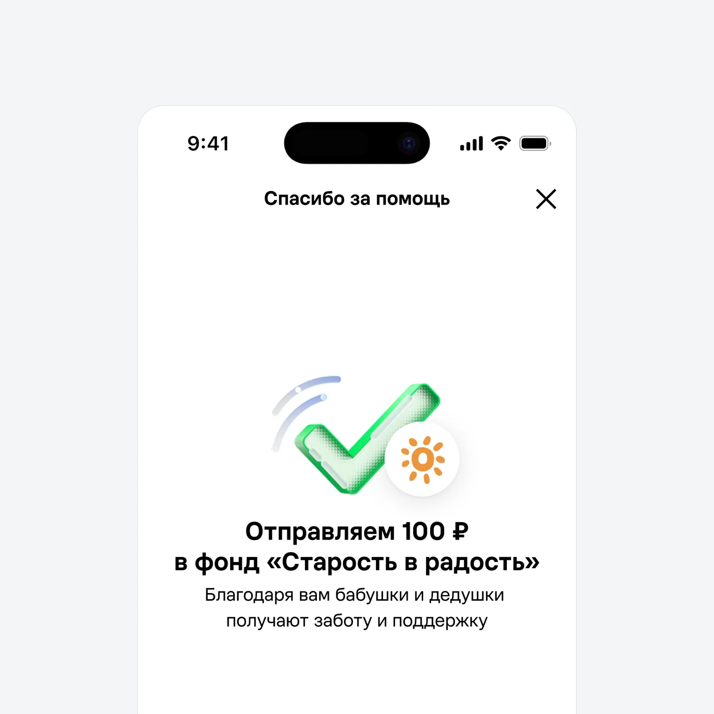
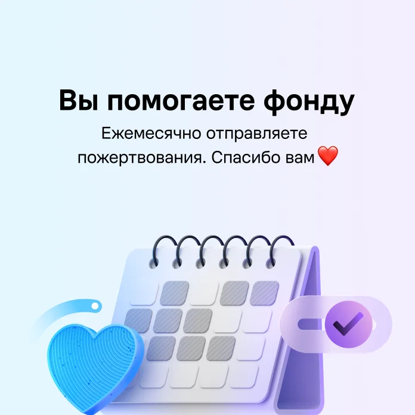
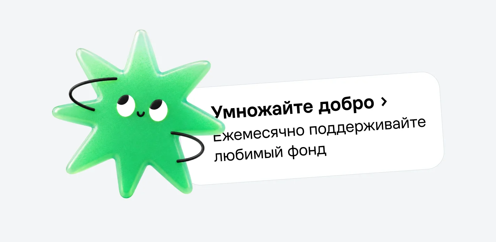
Results
~55
New subscriptions / day
64%
Average monthly donation
Reports before payment
Report views exceeded our target by 30%. In user interviews, donors asked to see a charity’s real impact upfront, so I moved reports earlier in the flow, before they choose an amount.
Donation mix
One-off donations declined, while the average payment across both donation types increased, meaning charities received more per transaction.
To see whether this translated into higher overall funding over time, I’d track total donations collected and the retention rate for second and third recurring payments.
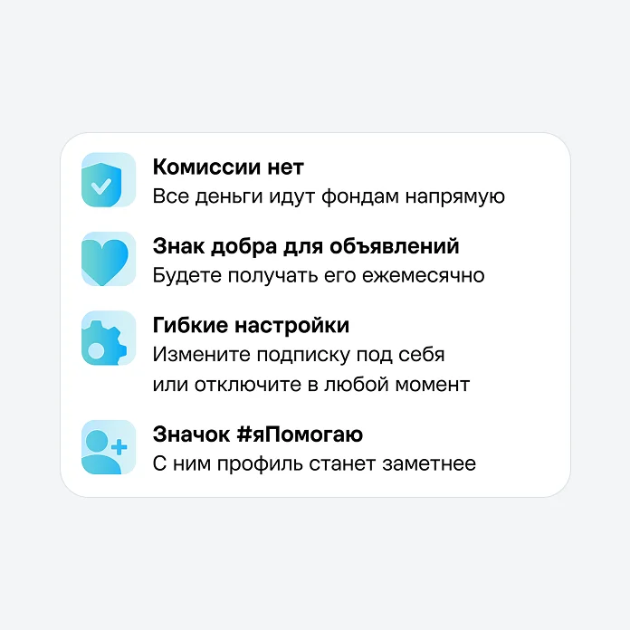
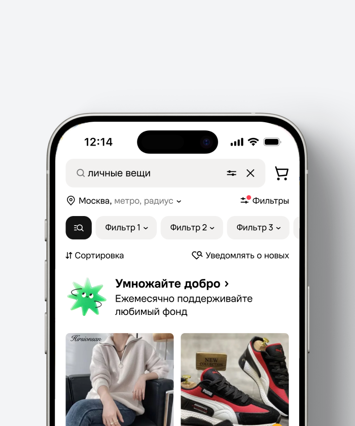
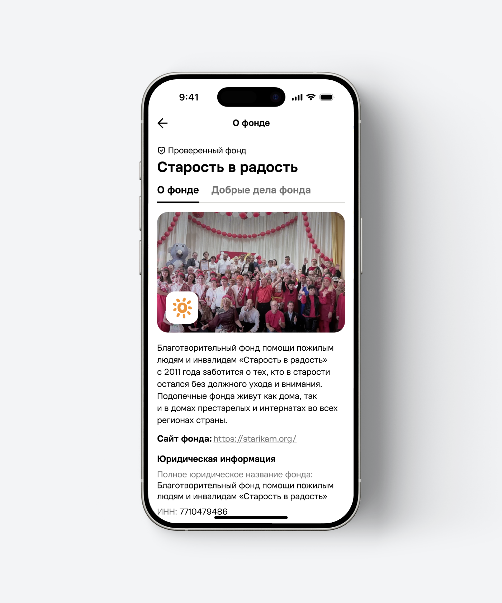